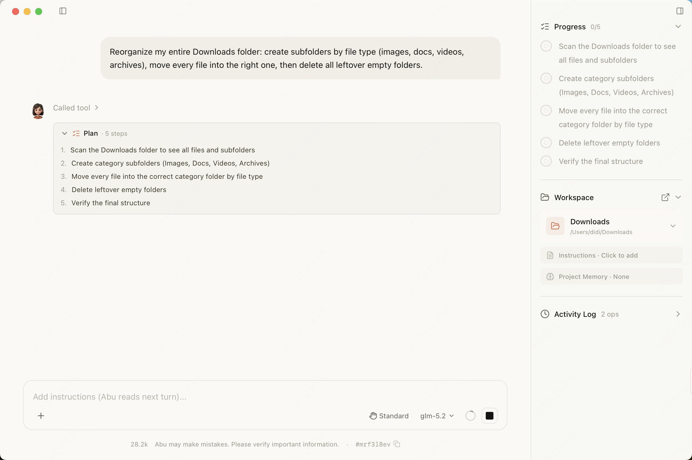
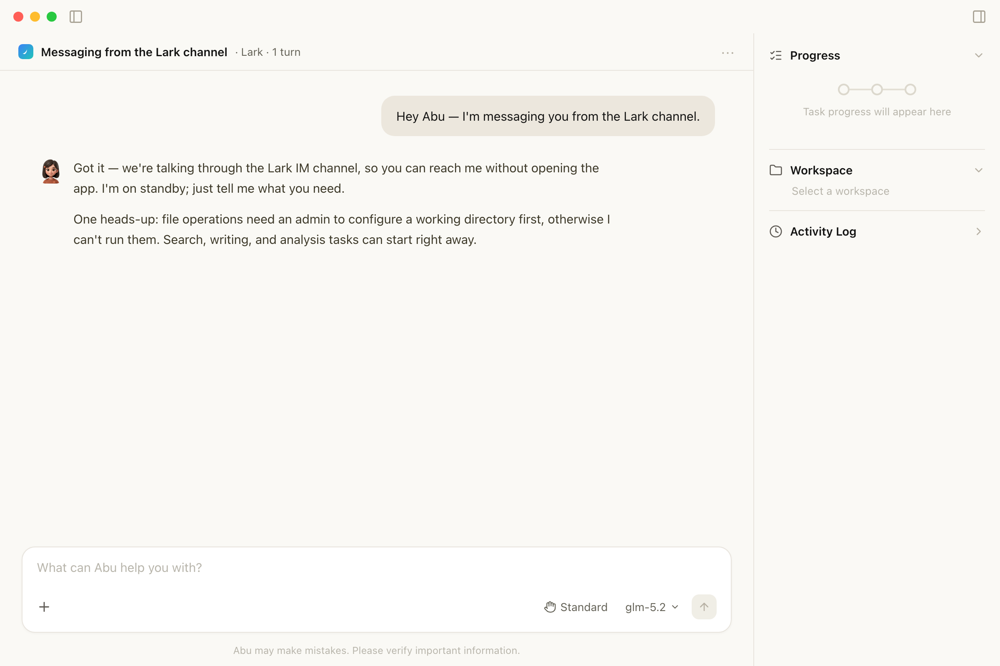
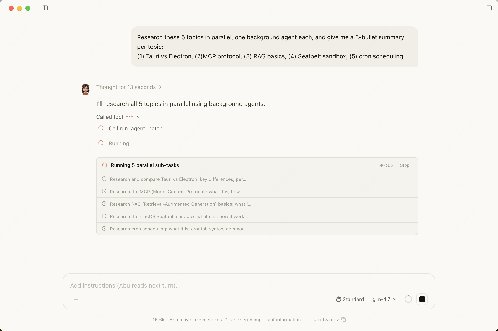
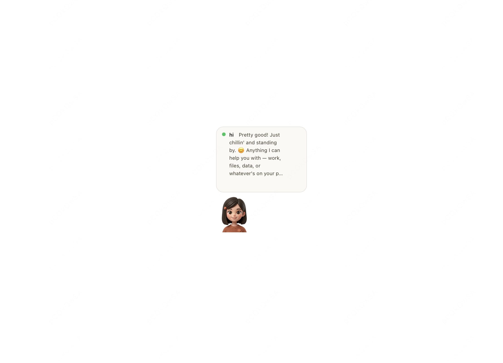

Just leave it to Abu
A local-first AI desktop assistant
You describe the task, Abu does the work — read files, run commands, write docs, build reports

A local-first AI desktop assistant
You describe the task, Abu does the work — read files, run commands, write docs, build reports

Not just chat — it plans autonomously, calls tools, and completes complex tasks
After running a complex workflow, Abu offers to "save it as a skill" — one click generates a draft; review, publish, and reuse it next time. Your workflows get more tailored to you the more you use it.
Plans tasks, calls tools, reads and writes files, and runs commands — completing complex workflows on its own.
28 built-in skills spanning Office documents, design, browser automation, and dev assistance — one-click install, fully extensible.
Connect databases, search engines, GitHub, and other external services through the Model Context Protocol.
Auto-trigger on HTTP requests, file changes, Cron schedules, IM messages, and more — for 24/7 unattended operation.
Screen reading plus keyboard and mouse control let Abu operate desktop apps directly, completing tasks like a human.
For high-risk steps like delete, overwrite, send, or install, Abu first proposes a step-by-step plan and only acts once you click "Confirm" — running read-only operations while it waits.
When it needs your call, Abu pops up an option card above the input box — single or multi-select, with a custom "Other" field — so you never have to hunt for the question in a wall of text.
Up to 5 background agents work at once, each running its own task with live progress — complex work advances in parallel.
A clean, intuitive interface with powerful, flexible capabilities
Plan Mode · High-risk tasks get a plan first — nothing runs until you confirm

IM Channel Chat · Just @Abu in Feishu or DingTalk to interact

Parallel Multi-Agent · Up to 5 background agents work at once with live progress

Desktop Pet · Activity Bar · A floating desktop widget shows Abu's status in real time
Whether you're a professional, a student, or a developer, Abu has your back
A modern, secure, and reliable stack
Up and running in three steps
Grab the installer for your platform from GitHub Releases
Open Settings, pick an API provider, and enter your API key
Head back to the main screen and tell Abu what you need in plain language
Join the Community
Follow updates, swap tips, and help make Abu better
WeChat Group
Scan to add the author on WeChat — note "Abu" and you'll be added to the group